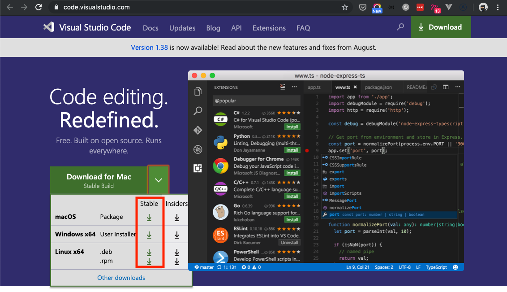
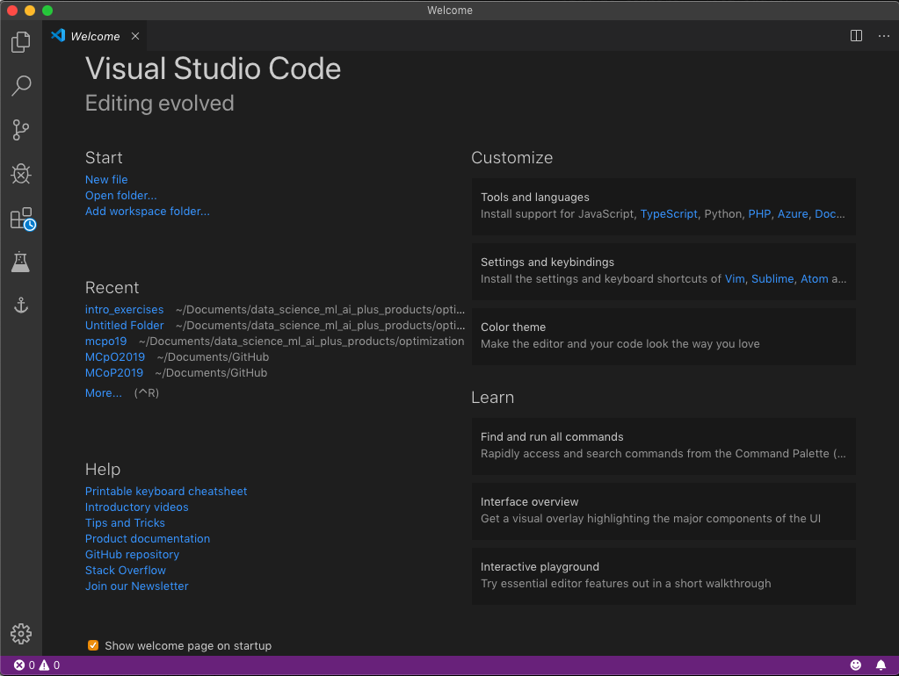
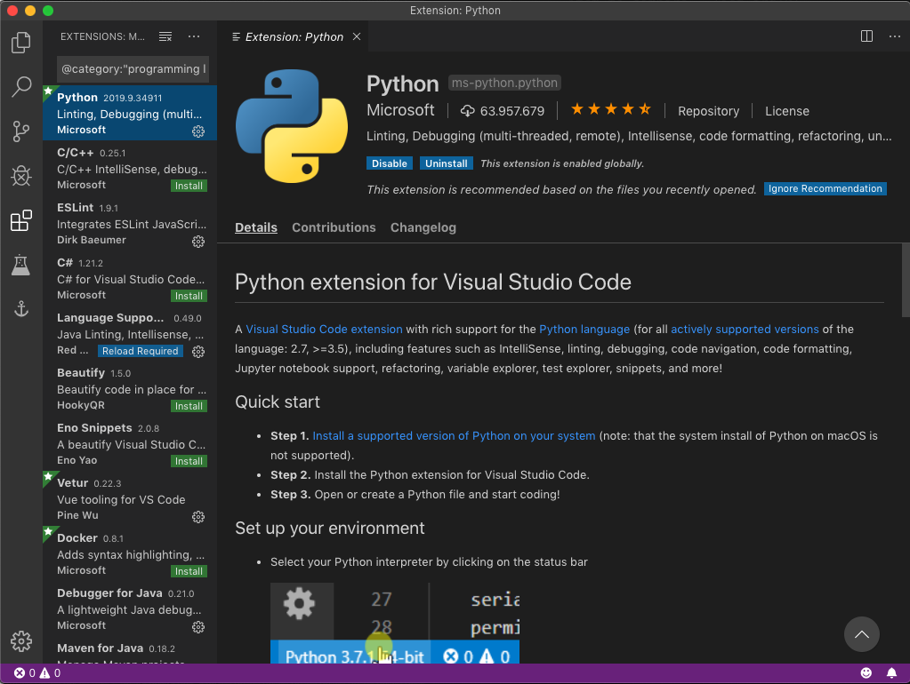
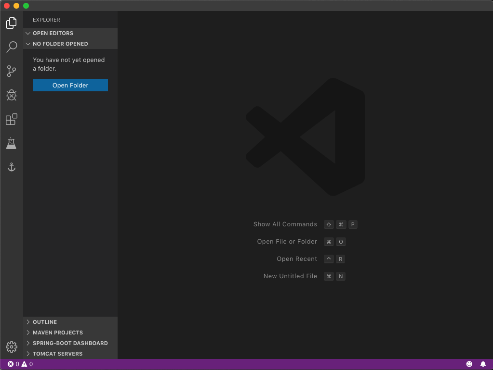
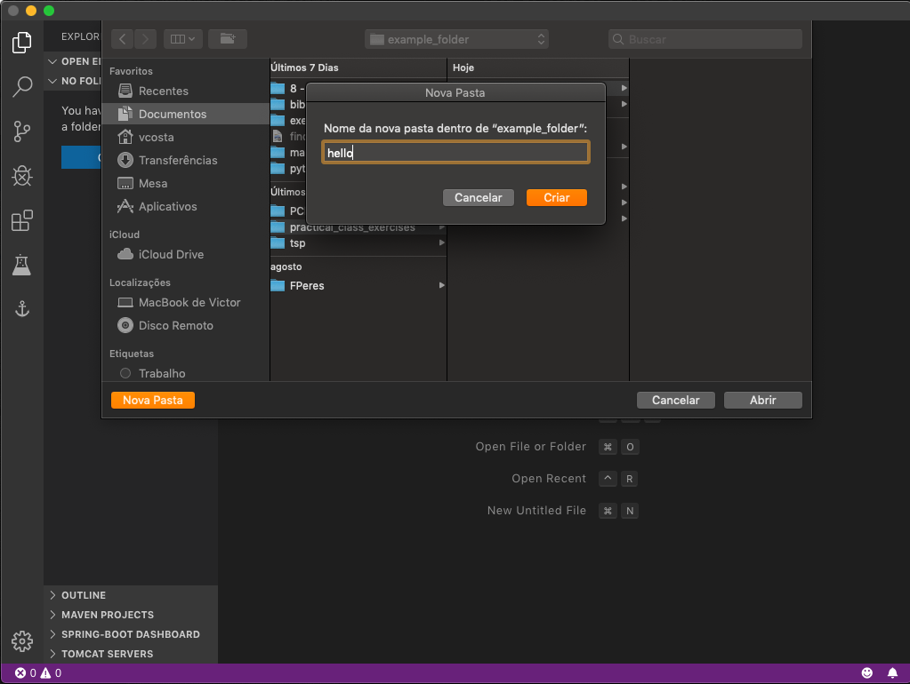
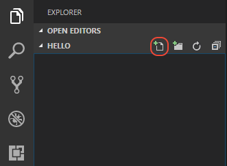
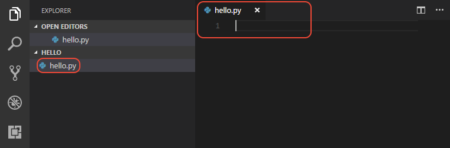
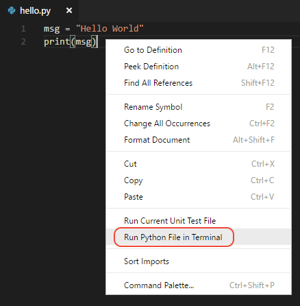
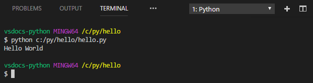

Visual Studio Code will be our development software.
All Nova's computers already have it installed. 👍
You'll only need to install the Python extension for VS Code. (check below)
Download VSCode
Go to https://code.visualstudio.com/ and download the latest 'stable build'.

Open the downloaded file and follow any last instructions if needed (in Mac, there are none).
That's all. You can start using VSCode.
Installing the Python extension for VS Code
Once you open VSCode, you'll be prompted with a Welcome page.

In Tools and Languages, under Customize, select to install the Python option.
Its an extension provided by Microsoft. Helps in debugging and auto-complete code.

Now, click on the Explorer tab — the upper left "files" icon.

Open a folder you'd like to store your Python files (or create a new folder).

Create a Python Hello World source code file. From the File Explorer toolbar, select the New File button on the hello folder:

Name the file hello.py, and it automatically opens in the editor:

By using the .py file extension, you tell VS Code to interpret this file as a Python program, so that it evaluates the contents with the Python extension and the selected interpreter.
Next, start entering the following source code:
Now run Hello World.
Right-click anywhere in the editor window and select Run Python File in Terminal (which saves the file automatically):

The command opens a terminal panel in which your Python interpreter is automatically activated, then runs python3 hello.py (macOS/Linux) or python hello.py
(Windows):

Nice
👍 First python code run in VSCode.
Let me know if there are any doubts.